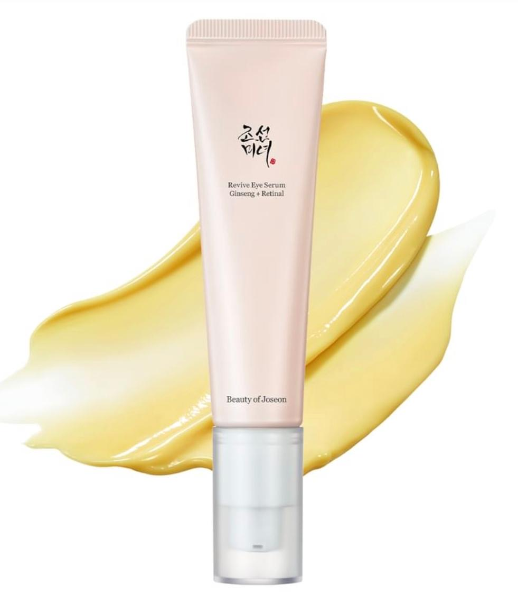

Beauty of Joseon Ginseng + Retinol (30ML)
Descripción
Un sérum para el contorno de los ojos que, al combinar extracto de ginseng y retinal, ayuda a mejorar el aspecto de las arrugas que aparecen en esta zona en pieles sensibles.
Ingredientes
Aqua, Panax Ginseng Root Extract, Glycerin, Dipropylene Glycol, Caprylic/Capric Triglyceride, 1,2-Hexanediol, Butylene Glycol Dicaprylate/Dicaprate, Niacinamide, Pentaerythrityl Tetraethylhexanoate, Cetearyl Alcohol, Cetearyl Olivate, Sorbitan Olivate, Butylene Glycol, Hydrogenated Lecithin, Carbomer, Glyceryl Stearate, Tromethamine, Macadamia Ternifolia Seed Oil, Ethylhexylglycerin, Adenosine, Cholesterol, Dextrin, Polyglyceryl-10 Oleate, Theobroma Cacao (Cocoa) Extract, Disodium EDTA, Brassica Campestris (Rapeseed) Sterols, Phytosteryl/Behenyl/Octyldodecyl Lauroyl Glutamate, Retinal, Silica, Aluminum/Magnesium Hydroxide Stearate, Sodium Hyaluronate, Tocopherol,Ceramide NP, Potassium Cetyl Phosphate, Pentaerythrityl Tetra- Di-T-Butyl Hydroxyhydrocinnamate, Palmitoyl Tripeptide-5.